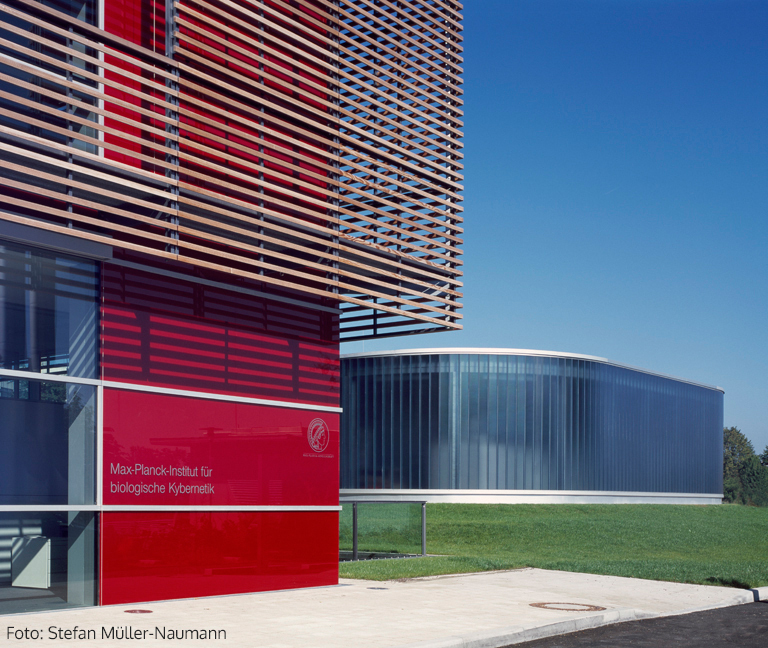

Welcome to the study Working Memory and Casino Games!
This study is part of a research project conducted by the Computational Principles of Intelligence Groupat the Max Planck Institute for Biological Cybernetics in Tuebingen, Germany.

Please switch off your addblockers during the study. That will allow us to trace back any unexpected errors.
Information on tasks and purpose of the study
Today, you are stepping into the role of a gambler visiting a casino. You will play two different types of games.Before playing the games, we will will test your working memory. After playing the games, we will ask you to answer some questions about your personality and emotions.
The purpose of the study is to gain knowledge about how different people choose between uncertain options.
A decision between uncertain options supposedly happens often in everyday life.
An example would be to decide for an icecream flavour.
You either decide for a flavour you have already chosen and like or you try out something new because it might taste even better.
On the next page you will start with the working memory test and you will get detailed instructions about the specific task you are going to carry out.
To be eligible to participate, you MUST be a fluent speaker of English, and have a keyboard and a mouse or touchpad with your device.
Please do not accept this task if you do not fit these criteria or are using a touch screen device, it will not work!
When the experiment will change to fullscreen mode, please do not exit the fullscreen mode until the end of the experiment.
How much time will it take and how much can you earn?
The study will take approx. 60 minutes.In any case, you will be paid a base payment of £6.00 pounds for your participation. Depending on your performance in the memory test and the casino games you can receive a bonus of up to £5.00.
Confidentiality
Your participation in this study will remain confidential. Your Prolific ID will NOT be shared with anyone outside the research team.Participation and withdrawal
Your participation in this study is completely voluntary and you may refuse to participateor you may choose to withdraw at any time.
However, you will only be paid for the participation upon completion and after clicking the button re-directing you to the prolific webpage and storing your completion code.
You will only get paid with your bonus if you also pass 75% or more of the attention checks within the study.
How to contact the researchers?
If you have questions or concerns about your participation or payment please email the researcher or the principal investigator.Data protection
Your data will be anonymized and only used in the manner described in our data protection sheet, available here (please do not fill out this sheet!).The following text box summarizes the main points. Please read it carefully and provide consent below:
By selecting the consent option below, you acknowledge that you fulfill all of the participation criteria and you agree to your data being used as described.